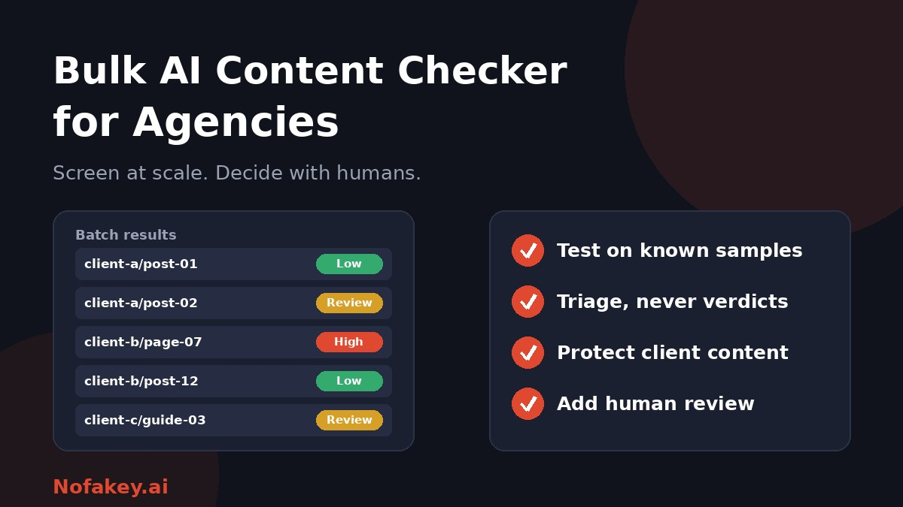

When an agency manages dozens of writers and hundreds of pages, checking every piece by hand is not realistic. Bulk checkers promise to scan whole folders or URL lists in one go. They can save time, but they can also create false confidence and privacy problems if used carelessly. This guide covers how to choose a bulk AI content checker and use it responsibly.
What a bulk checker does
Bulk tools take many documents, files or URLs in a batch, often through a spreadsheet template, a folder upload or an API, and return a result for each item. Typical checks include:
- AI-likelihood scoring of the text, sometimes with highlighted sections.
- Plagiarism and duplication checks against the web or your own library.
- Fact-check flags that point to claims worth verifying.
- Readability and grammar checks.
Notice that only the first is about AI. For most agencies, the other checks, along with human review, catch the problems that actually hurt clients.
What a bulk scan can and cannot tell you
| It can | It cannot |
|---|---|
| Rank a large batch by how much it resembles AI text | Prove who wrote a piece or what tools they used |
| Surface duplicated or recycled content | Tell whether a page is accurate, original in thought, or useful |
| Flag pieces for a closer editorial look | Judge short, edited or heavily formatted text reliably |
| Create a consistent first-pass routine | Avoid false positives, especially on formal writing or non-native English |
The core limits are explained in are AI detectors accurate? Running the same detector on a thousand pages does not make each result more reliable. It only makes errors faster.
How to choose a bulk AI content checker
| Criterion | What to look for |
|---|---|
| Your own test results | Performance on a sample set where you know which pieces are human and which are AI |
| Stability | Similar scores when the same text is scanned twice or lightly reformatted |
| Explanations | Per-document scores plus highlighted sections, not just one number |
| Input options | CSV, file uploads, folders, URL lists or an API, matching how you work |
| Limits and cost | File size, batch size, credit use per scan, and a cost estimate before you run |
| Other checks | Plagiarism, fact flags, readability and grammar in the same pass |
| Reporting and export | Filters, history and exportable results for client reports |
| Team features | Multiple users, permissions and per-client separation |
| Language support | Works well on the languages and writing styles you handle |
| Data handling | Storage, retention, deletion and whether submissions are used for training |
Run a calibration test before you rely on a tool
- Build a small test set of 30 to 50 pieces you know the origin of: clearly human-written work, clearly AI-generated text, and edited mixes.
- Include realistic edge cases: short pieces, technical writing, non-native English writing and lists.
- Scan them in one batch and record every result.
- Count the mistakes in both directions: human work flagged as AI, and AI work that passed.
- Test stability by scanning a few pieces twice or after small edits.
- Decide what the tool is allowed to influence. If it wrongly flags honest writers on your own samples, use it only as a loose sorting aid.
- Re-test periodically, because tools and AI models change.
Treat vendor accuracy claims with care. They usually come from the vendor's own tests on their own data, which may not match your content.
A safe bulk-checking workflow
- Agree the rules with clients and writers. Say what AI use is allowed, what must be disclosed and how checks will be used.
- Prepare the batch. Organise by client and content type, and remove anything confidential that the tool does not need.
- Run the scan with the checks you need, and keep records of the settings.
- Sort into tiers, for example low, review and high priority, instead of pass or fail.
- Review flagged items as an editor. Read the piece, verify facts and sources, and look at drafts or history.
- Talk to the writer about process before drawing any conclusion.
- Decide on quality and policy grounds, and record your reasoning.
- Report patterns, such as which workflows or sources produce the most problems, not just individual scores.
Protect client content and contracts
- Check your client agreements. Some forbid uploading unpublished or confidential material to third parties.
- Review vendor data handling. Ask how long content is stored, who can access it and whether it is used to train models.
- Use per-client separation so one client's content is not mixed with another's.
- Limit access to staff who need results.
- Delete what you no longer need, following your retention policy and data protection rules.
- Be open with writers that their work may be scanned.
Be fair to writers
- Assume good faith. False positives happen, especially with clear, formal writing and non-native English.
- Do not set automatic penalties based on a threshold.
- Give writers a chance to explain, and ask for notes or drafts.
- Keep results private and share them only as needed.
- Pay attention to "detector-beating" rewriters. They encourage a cat-and-mouse game that does not improve quality, and rewriting just to lower a score can make content worse.
Check what actually matters to clients
Clients care less about whether AI was used and more about whether content is accurate, original and useful, and whether it protects their brand. Build your checks around that:
- Accuracy: verify facts, figures, quotes and sources.
- Originality: look for duplication and generic rewrites.
- Brand voice and compliance: check tone and regulated claims.
- Disclosure: confirm labels where needed. See how to label AI-generated content.
For a full process that goes beyond scanning, read our guide to an AI content audit for SEO agencies. For how search engines treat AI-assisted content, see does Google penalize AI-generated content?
Reporting bulk results to clients
- Explain the method and its limits in plain language.
- Show tiers and actions, not raw percentages without context.
- Give examples with evidence, such as unsupported claims or invented sources.
- Make a plan: what will be rewritten, merged, removed or reviewed, and who owns it.
- Avoid promises. No checker or clean-up can guarantee rankings.
Editorial teams in other industries use similar steps. See AI detectors for publishers and editors for a review workflow.
Conclusion
A bulk AI content checker can speed up screening for agencies, but only if you treat it as a sorting tool. Test it on known samples, choose it for stability and data handling, protect client content, keep humans in the loop, and judge work on accuracy, originality and policy. For a quick first read on a suspicious claim or message, try our free checker, and find more guides on the Nofakey.ai blog.
Frequently asked questions
What is a bulk AI content checker?
A tool that scans many documents or URLs in one batch and reports scores such as likelihood of AI involvement, and often plagiarism, readability or grammar. It is meant for screening large volumes of content.
Are bulk AI detection results reliable?
They are probabilistic and can be wrong in both directions, so treat them as a triage signal, not proof. Test any tool on content you know the origin of before relying on it.
Is it safe to upload client content to a bulk checker?
Only after checking the vendor’s data handling: storage, retention, use for training, access controls and your client contracts. Unpublished or confidential content needs extra care.
What should an agency do with a high AI score?
Review the piece yourself, check facts and sources, ask the writer about their process, and judge it on quality and policy compliance. Do not penalise a writer on a score alone.
Should agencies ban AI in content they deliver?
That depends on the client contract and policy. What matters most is clear rules, honest disclosure, human review and accuracy.
Want a quick first read on a claim or message?
Run it through the checker